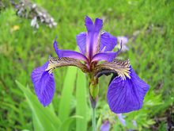
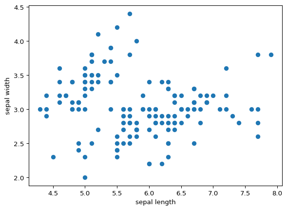
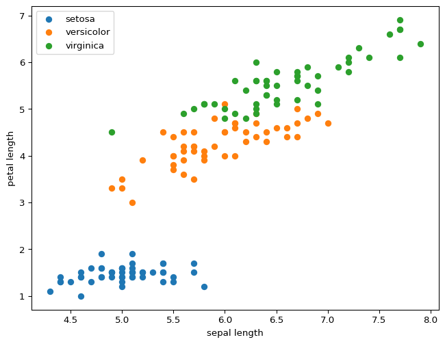

!pip install -q pandas numpy matplotlibForberedelser
I første time skal vi se litt på hva data-drevne prosjekter er for noe, snakke litt om hvordan undervisningen gjennomføres og begynne så smått å se på databehandling.
Følg instruksjonene under for å være forberedt til første time.
Installere JupyterLab
Vi skal bruke Python vha. Jupyter notebook i kurset. For å kunne gjøre datavitenskap trenger vi å installere noen pakker i python-installasjonen. I første omgang ønsker vi at dere skal kjøre JupyterLab på egen maskin. Dette kan installeres på flere forskjellige måter. Vi anbefaler å gjøre en av følgende:
- Bruke Visual Studio Code med Jupyter-extension
- Dersom du er komfortabel med terminalvinduet, og vet hva
pip installer for noe, installer JupyterLab med kommandoenpip install jupyterlab. Vi anbefaler at du gjør dette i et virtual environment, for eksempel med pyenv-virtualenv. - Om du ikke er komfortabel med terminalen: Installer Anaconda. Der følger JupyterLab med, og fungerer fint.
Installere python-pakker og sjekke at de fungerer
Enten kjøre følgende kommando i terminalen:
pip install pandas numpy matplotlibeller følgende kommando inne i JupyterLab:
Test oppsettet med å se på data av ulike typer Iris
| setosa | versicolor | virginica |
|---|---|---|
 |
import pandas as pd
file_name = "https://raw.githubusercontent.com/uiuc-cse/data-fa14/gh-pages/data/iris.csv"
df = pd.read_csv(file_name)
df.head()| sepal_length | sepal_width | petal_length | petal_width | species | |
|---|---|---|---|---|---|
| 0 | 5.1 | 3.5 | 1.4 | 0.2 | setosa |
| 1 | 4.9 | 3.0 | 1.4 | 0.2 | setosa |
| 2 | 4.7 | 3.2 | 1.3 | 0.2 | setosa |
| 3 | 4.6 | 3.1 | 1.5 | 0.2 | setosa |
| 4 | 5.0 | 3.6 | 1.4 | 0.2 | setosa |
Etter kommandoen over skal du se en tabell med data fra Iris-datasettet.
import matplotlib.pyplot as plt
plt.scatter(df["sepal_length"], df["sepal_width"])
plt.xlabel("sepal length")
plt.ylabel("sepal width")Text(0, 0.5, 'sepal width')
fig, ax = plt.subplots(figsize=(8,6))
for species, s_df in df.groupby("species"):
ax.scatter(s_df["sepal_length"], s_df["petal_length"], label=species)
plt.xlabel("sepal length")
plt.ylabel("petal length")
plt.legend()
Om alt dette fungerer, og du får opp noe som ligner på figurene over, er du klar for undervisningstime.